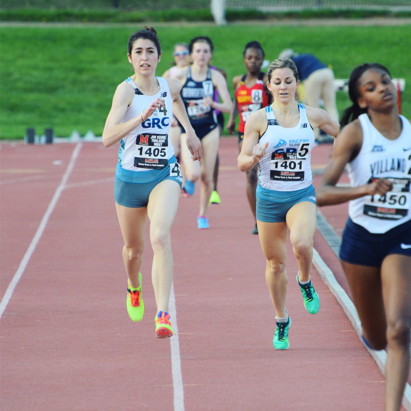

Georgetown Running Club
Alex Morris

Growing up in London, England, running was mainly a way for Alex to stay in shape in between soccer seasons. However, it didn’t take long for her to fall in love with running around in circles and she hasn’t looked back since. At Middlebury College, Alex focused primarily on the 400 and 800 meters, ending her four years as the school record holder in the 400m and a five-time All-American in the 400, 4x400, and the distance medley relay. At GRC she hopes to explore running longer distances on the track. Alex works on Capitol Hill as a staffer for Congressman Welch trying to make those bureaucratic wheels turn. Alex is the GRC women's team director.
Personal Bests
200: 26.16
400: 55.69
600: 1:36.9
800: 2:08.87
1000: 2:59.33
1500: 4:34.87
5k: 19:33